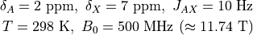

nmr_sims.experiments¶
This module contains a collection of pre-defined objects for simulating a number of solution-state NMR experiments. The current available experiments are:
1D Pulse-acquire (
nmr_sims.experiments.pa)Homonuclear J-resolved (
nmr_sims.experiments.jres)HSQC (
nmr_sims.experiments.hsqc)
The Simulation base class has been created with the intention of making
new oulse sequences easy to implement.
- nmr_sims.experiments.SAMPLE_SPIN_SYSTEM = <nmr_sims.spin_system.SpinSystem object>¶
SAMPLE_SPIN_SYSTEMcorresponds to a proton AX₃ spin system, with: